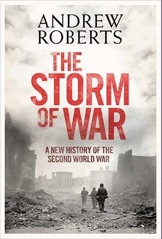

"The Storm of War: A New History of the Second World War"
- Read on 2021-11-29
- Rating: ️️️️️
- Format: 🎧 (28 hours 36 minutes)
Of the comprehensive books about World War II that I've read or listened to, this has easily been my favorite. It's comprehensive, yet flowing in its narration and organization. Roberts does a great job of helping maintain interest in the subject, and the continuous insertion of new anecdotes was helpful and insightful. My brain still struggles to comprehend the sheer magnitude of this war, but some of the statistics he highlights were really illuminating. Furthermore, I really appreciated how much he analyzed and reviewed what decisions, moments, battles, movements, etc, and how they contributed to the outcomes for all sides of the war - and even some pondering on how things would have been different had alternate events (or timing) took place.
This book is good enough that, although I've read a handful of other books about certain areas or topics within the war, I would feel no need to ever recommend any of them if the person had yet to read this book. For now, if anybody asks me for a recommendation for a comprehensive book on WWII, this is it. Well done, Mr. Roberts.
Plus, if you listen to this book, the reader Christian Rodska does a fantastic job - seemingly spot-on pronunciations for various non-translated names/phrases in various languages, as well as accents for various people, and leaders. From Hitler, Churchill, Roosevelt, Stalin, de Gaulle, to random German and Russian soldiers, and even Patton's iconic tone - he imitated all of them. Really, a fantastic reader.
- Prior: The Rosie Project
- Next: Born to Run